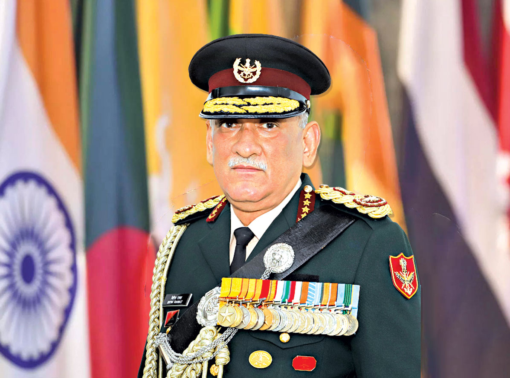

First Chief of Defence Staff of India

General Bipin Rawat was a four-star General of the Indian Army and the first Chief of Defence Staff (CDS) of India. He previously served as the Chief of Army Staff of the Indian Army. Known for his leadership, courage and dedication, he devoted his life to strengthening India's armed forces and national security.
"The armed forces are the pride of our nation."